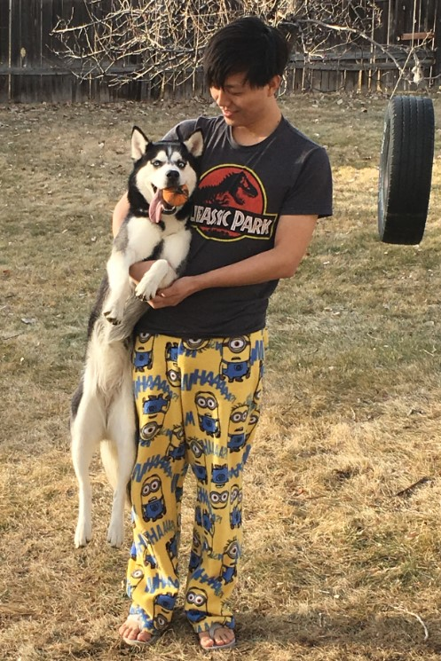

Centered paragraph. Jinxin is a second year statistics master student at Wake Forest University Math & Stats Department. Before attending Wake, he obtained his bacheloar degress in Statistics, Finance from Colorado State University and Labor Economics from Sichuan University
Me with Xiaobao
Me with Xiaobao 1
Me with Xiaobao 2
I'm Jinxin and I love Eva. I am aslo very awesome in research.